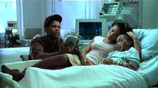

| John Q. (SE)/ D+,A- |
| New Line/2002/116/ANA 1.85 |
John Q. is often simplistically amateurish. Cliché close-ups coupled with some of the most abominable dialogue imaginable is almost embarrassing at times. Sadly, the script is no more than weak soap opera. There's a moment when the emergency room nurse, protective of a doctor, chimes in with a line like, "Doctor, I won't let you ruin your career." Even in a "General Hospital" type soap they'd exorcise a line like that. There are other moments equally embarrassing. At times the film plays like broad comedy. The director's cutting emphasizes these moments, and I don't really think he's looking for the humor in the situation. It's heavy-handed, pedantic movie making. There's a drone-like effort to take the US health care system to task, but it's not effective. Characters like the hospital administrator are so calculatingly cold they don't even mount a semblance of reality.
 |
|
A family in crisis. ©New Line |
There are times when John Q. feels like
it wants to break into a Dog Day
Afternoon type chant. Certainly, the staging is similar in ways,
with almost celebratory crowds gathered outside to witness the real life
drama of a man driven to extremes. Even the early montage depicting John
Q.'s struggle to find help for his daughter and to raise money is patently
artificial. The situation is so unrealistic. Counting the dollars is
simply annoying, and cloying. Many of the scenes play like infomercials.
Yes, there are scenes that play to the
heartstrings. One feels for the family and the little boy, but at the same
time everything seems so false and set-up. There are actually emergency
room speeches in which various hostages try to address concerns about our
health care system. Give me a break please, and I don't mean my arm. It's
preaching of the lowest order. Even the ending isn't satisfying. It rings
false like everything else in this movie.
It's hard not to like a Denzel Washington performance.
There are moments in John Q. when Washington has strong, magnetic
speeches, and he cries pretty well too. He's always a strong presence in
every film he makes. Washington's acting consistency is almost uncanny.
Yet, his task as John Q. Archibald is an insurmountable one. It's a
tougher task than even John Q's. John Q. only has to try to save
his boy. Denzel has to try to save this movie. No way. Even Robert
Duvall, one of my favorite actors seems to have his hands ties by a
lackluster role as a hostage negotiator. James Woods plays the heart
surgeon buried under such poorly set up situations that he seems at a loss
at various times.
John Q. is a very fine looking DVD. It's
very sharp. Perhaps there a couple of scenes that are not optimally sharp.
There's no edginess to the picture. Color is outstanding. Depth of image
is very good. Shadow detail is excellent. It's a punchy looking picture
with lots of life to it. Various lighting situations are effectively
translated to DVD. Good, engaging DTS sound track. Surround details are
effectively places. Some of the sound is absolutely annoying in the way it
attempts to emphasize emotion or crisis.
New Line has packaged John Q. as one of
its Infinifilm releases. There's two original documentaries, one focusing
on the health care system, another on the film production. Audio
commentary is provided by director Nick Cassavetes, screenwriter James
Kearns, producer Mark Burg and director of photography Roger Stoffers.
Deleted scenes are also included with commentary from the director.
October Sky/A,A

Johnston’s glorious montage work accompanied by Marc Isham's stunning Americana score are reason enough for watching this exquisite movie.

The Movie Poster Archive includes extensive poster images from the films of stars like Susan Hayward, Kirk Douglas, Katharine Hepburn and many more. Our featured star is Gregory Peck


Manufacturer of computer-video interfaces, switchers, distribution
amplifiers, computer-video scan converters, and high resolution cable.
Found in many high end home theater systems.

Maximizing home theater sound and image featuring quality
interconnects and speaker wire.

Runco home theater products continue to be a force for better imaging.
Leaders in high end projectors with a vertical line of display devices.

DVD reviews for women from a woman's point of view

ISF Course Instructors Jim Burns and Kevin Miller are hosting the Digital Film Forum. Join
professionals and enthusiasts for lively home theater discussion.

Selections from the Feature
Archive include articles on Akira Kurosawa, Frank Darabont, Blonde Bimbos, Hollywood Street Gangs, or Vietnam: The Hollywood Pariah, and many
more....
Capturing Kennedy

Steven Culp extracts the essence of Robert F. Kennedy in Roger Donaldson's
outstanding feature Thirteen Days. Culp recently shared insights on
the performance and his career with Films on Disc. Click the image for
more.